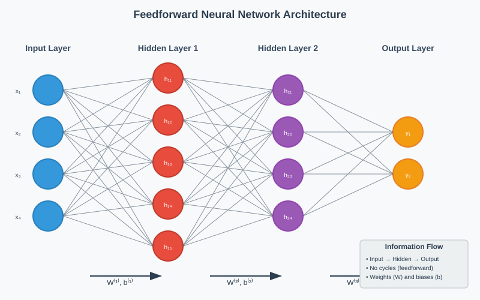
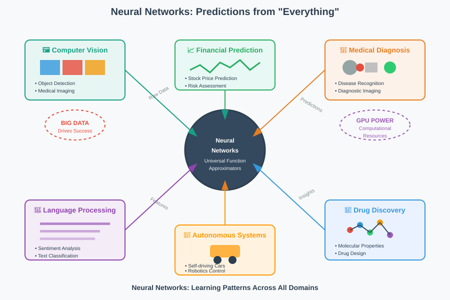
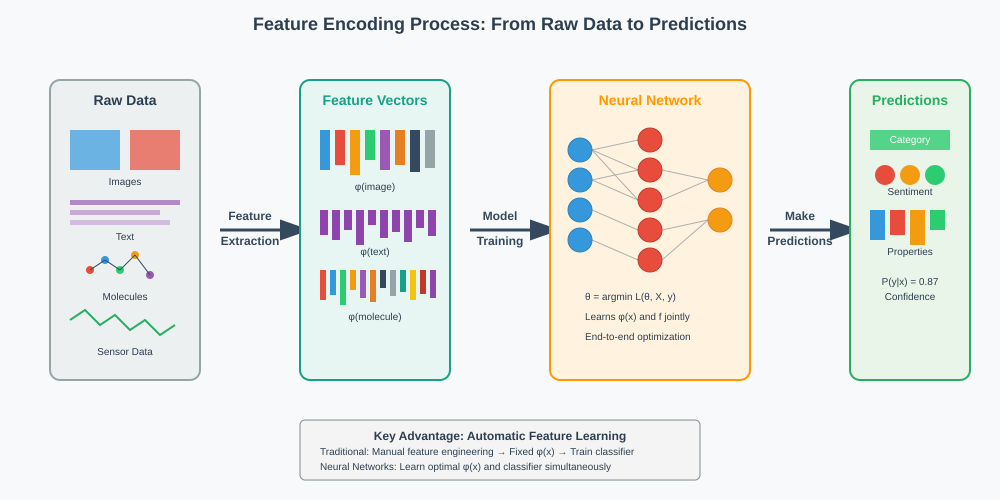
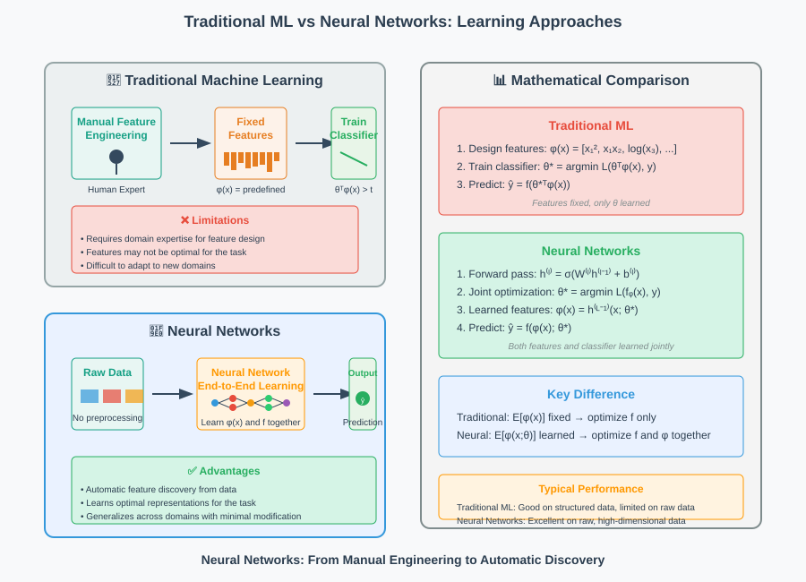
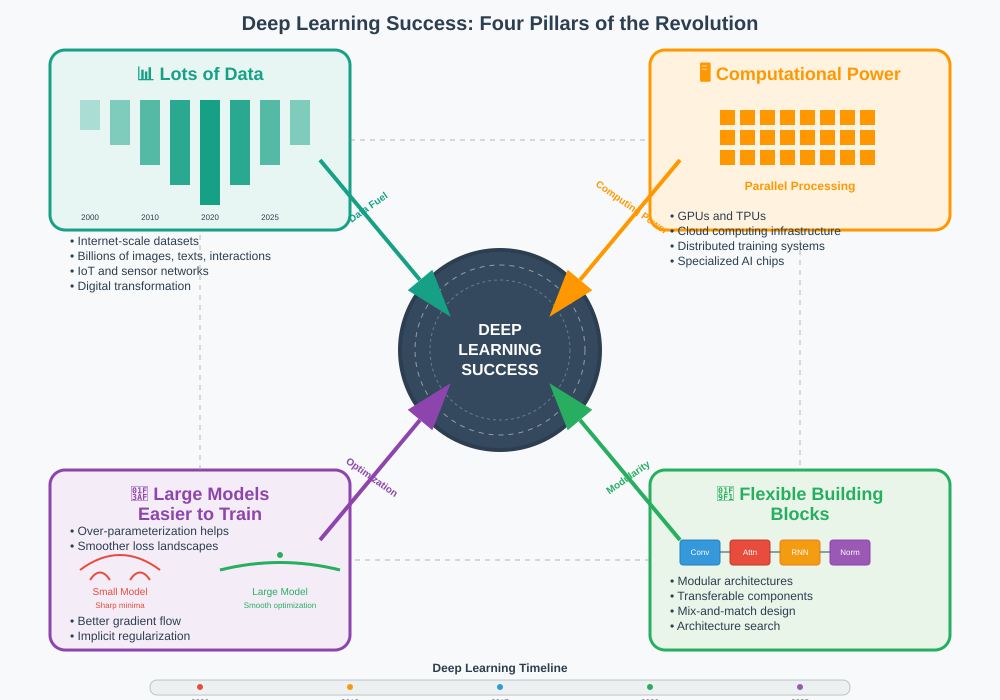

Feedforward Neural Networks: The Foundation of Deep Learning
🧭 Quick Navigation
- Introduction to Feedforward Neural Networks
- Why Neural Networks Matter
- Learning from Data: Feature Encoding
- Deep Learning Success Factors
- Mathematical Foundations
- Practical Implementation
- Model Comparisons
- References & Further Reading
🧠 Introduction to Feedforward Neural Networks
A Feed Forward Neural Network is an artificial neural network where connections between nodes do not form cycles. This fundamental architecture serves as the building block for most modern neural network designs.

Key Characteristics
- Acyclic Structure: Information flows in one direction from input to output
- Layered Organization: Consists of input layer, hidden layer(s), and output layer
- Universal Approximator: Can theoretically approximate any continuous function
- Foundation Architecture: Building block for more complex networks
Network Components
| Component | Function | Description |
|---|---|---|
| Input Layer | Data Reception | Receives raw input features |
| Hidden Layer(s) | Feature Transformation | Learns complex representations |
| Output Layer | Prediction | Produces final predictions |
| Weights & Biases | Parameters | Learnable parameters optimized during training |
📊 Why Neural Networks Matter
As data volumes explode across industries, we need sophisticated tools to extract meaningful patterns and make accurate predictions from diverse data types.

Real-World Applications
🖼️ Computer Vision
- Object detection and recognition
- Medical image analysis for disease diagnosis
- Autonomous vehicle perception systems
🧬 Scientific Discovery
- Molecular property prediction for drug design
- Climate modeling and weather forecasting
- Protein structure prediction
📈 Business Intelligence
- Customer behavior prediction
- Financial risk assessment
- Supply chain optimization
The Data-Driven Motivation
The exponential growth in data generation necessitates intelligent systems capable of:
- Pattern Recognition: Identifying complex relationships in high-dimensional data
- Automatic Feature Learning: Discovering relevant features without manual engineering
- Scalable Processing: Handling massive datasets efficiently
- Generalization: Making accurate predictions on unseen data
🔄 Learning from Data: Feature Encoding
The core strategy in machine learning is encoding data as useful, informative feature vectors that enable accurate predictions.

Traditional Approaches
Linear Classifiers
Compare θᵀX to a threshold:
Decision = sign(θ₁x₁ + θ₂x₂ + ... + θₙxₙ - threshold)
- Advantages: Simple, interpretable, fast training
- Limitations: Cannot capture non-linear relationships
Non-linear Classifiers
Compare h(X) to a threshold:
Decision = sign(h(x₁, x₂, ..., xₙ) - threshold)
Where h(X) can be polynomial features: θ₁X₁ + θ₂X₂ + θ₁₂X₁X₂
The Neural Network Advantage
Traditional methods require manual feature engineering, but neural networks:
- Learn representations automatically from raw data
- Discover complex patterns that humans might miss
- Adapt features to specific tasks and datasets
- Handle high-dimensional data effectively

The Challenge: Joint Learning
Neural networks must simultaneously:
- Learn optimal feature encodings (representation learning)
- Learn prediction mappings (classification/regression)
- Optimize both processes together (end-to-end training)
This joint optimization typically requires: - Larger datasets for stable training - More computational resources for convergence - Sophisticated optimization algorithms (e.g., backpropagation)
🚀 Deep Learning Success Factors
The remarkable success of deep learning stems from the convergence of several key factors:

1. 📈 Big Data Revolution
Modern problems require massive scale:
- Internet-scale datasets: Billions of images, text documents, user interactions
- Sensor networks: IoT devices generating continuous data streams
- Digital transformation: Every industry creating unprecedented data volumes
2. 🖥️ Computational Resources
Hardware advances enabling deep learning:
| Technology | Impact | Examples |
|---|---|---|
| GPUs | Parallel processing for matrix operations | NVIDIA V100, A100 |
| TPUs | Specialized tensor processing | Google TPU v4 |
| Cloud Computing | Scalable, on-demand resources | AWS, GCP, Azure |
| Distributed Training | Multi-machine parallelization | Horovod, DeepSpeed |
3. 🎯 Large Models are Easier to Train
Counter-intuitively, larger models often train more reliably:
Optimization Landscape: Larger models → Fewer sharp minima → Better generalization
- Over-parameterization: Provides multiple paths to good solutions
- Gradient flow: Smoother optimization surfaces
- Implicit regularization: Built-in bias toward simpler solutions
4. 🧱 Flexible Building Blocks
Modern deep learning provides modular components:
Common Representations
- Embeddings: Dense vector representations for discrete objects
- Attention mechanisms: Dynamic feature weighting
- Normalization layers: Stable training dynamics
Diverse Architectures
- Convolutional Networks: Spatial pattern recognition
- Recurrent Networks: Sequential data processing
- Transformers: Parallel sequence modeling
- Graph Neural Networks: Relational data analysis
🔢 Mathematical Foundations
Forward Propagation
For a feedforward network with L layers:
a⁽⁰⁾ = x (input)
z⁽ˡ⁾ = W⁽ˡ⁾a⁽ˡ⁻¹⁾ + b⁽ˡ⁾
a⁽ˡ⁾ = σ(z⁽ˡ⁾)
ŷ = a⁽ᴸ⁾ (output)
Where:
- W⁽ˡ⁾: Weight matrix for layer l
- b⁽ˡ⁾: Bias vector for layer l
- σ: Activation function (ReLU, sigmoid, tanh)
- a⁽ˡ⁾: Activations at layer l
Activation Functions
| Function | Formula | Properties |
|---|---|---|
| ReLU | max(0, x) | Non-saturating, sparse |
| Sigmoid | 1/(1 + e⁻ˣ) | Smooth, bounded |
| Tanh | (eˣ - e⁻ˣ)/(eˣ + e⁻ˣ) | Zero-centered |
Loss Functions
Classification (Cross-Entropy)
L = -∑ᵢ yᵢ log(ŷᵢ)
Regression (Mean Squared Error)
L = (1/2n) ∑ᵢ (yᵢ - ŷᵢ)²
💻 Practical Implementation
🔗 Google Colab Integration

Basic Feedforward Network Implementation
import torch
import torch.nn as nn
import torch.optim as optim
class FeedforwardNet(nn.Module):
def __init__(self, input_dim, hidden_dim, output_dim):
super(FeedforwardNet, self).__init__()
self.fc1 = nn.Linear(input_dim, hidden_dim)
self.fc2 = nn.Linear(hidden_dim, hidden_dim)
self.fc3 = nn.Linear(hidden_dim, output_dim)
self.relu = nn.ReLU()
def forward(self, x):
x = self.relu(self.fc1(x))
x = self.relu(self.fc2(x))
x = self.fc3(x)
return x
# Initialize model
model = FeedforwardNet(784, 128, 10)
criterion = nn.CrossEntropyLoss()
optimizer = optim.Adam(model.parameters(), lr=0.001)
🤗 Hugging Face Models
Popular pre-trained models for various tasks:
- BERT: Text classification and understanding
- ResNet: Image classification
- T5: Text-to-text generation
📋 Model Comparisons
Traditional ML vs. Neural Networks
| Aspect | Traditional ML | Neural Networks |
|---|---|---|
| Feature Engineering | Manual | Automatic |
| Data Requirements | Moderate | Large |
| Interpretability | High | Low |
| Performance | Good on structured data | Excellent on unstructured data |
| Training Time | Fast | Slow |
| Computational Resources | Low | High |
Network Architecture Comparison
| Architecture | Best For | Parameters | Training Complexity |
|---|---|---|---|
| Single Layer Perceptron | Linear separable problems | O(n) | Low |
| Multi-Layer Perceptron | Non-linear classification | O(n²) | Medium |
| Deep Networks | Complex pattern recognition | O(n³) | High |
| Convolutional Networks | Image processing | O(n²) | High |
📚 References & Further Reading
📖 Foundational Papers
- Universal Approximation Theorem - Hornik et al. (1989)
- Deep Learning - LeCun, Bengio & Hinton (2015)
- Backpropagation Algorithm - Rumelhart et al. (1986)
📚 Essential Books
- "Deep Learning" by Ian Goodfellow, Yoshua Bengio, and Aaron Courville
- "Neural Networks and Deep Learning" by Michael Nielsen
- "Pattern Recognition and Machine Learning" by Christopher Bishop
🔗 Online Resources
🛠️ Implementation Frameworks
- PyTorch: Dynamic computation graphs
- TensorFlow: Production-ready deployment
- Keras: High-level neural network API
- JAX: High-performance scientific computing
Created with ❤️ for the Deep Learning Community
This documentation provides a comprehensive foundation for understanding feedforward neural networks and their role in modern deep learning systems.